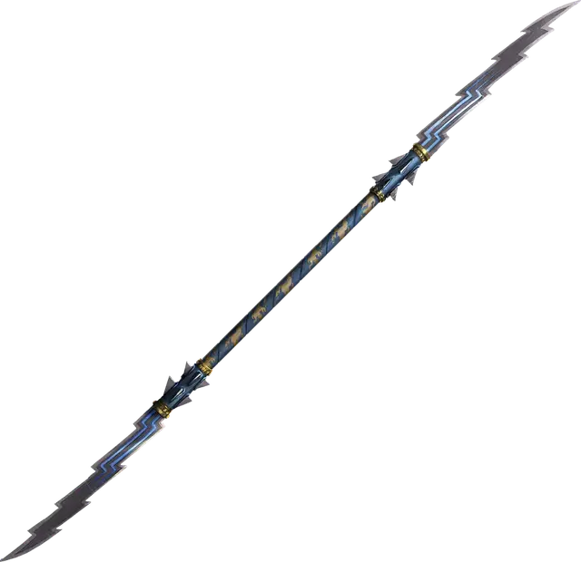

Метательное копьё молнии
Javelin of Lightning
Оружие (метательное копьё), необычное

Рекомендованная стоимость 101-500 зм
Это метательное копьё — магическое оружие. Если вы метнёте его и произнесёте его командное слово, оно превратится в молнию, формируя линию шириной 5 футов и простирающуюся от вас до цели, находящейся в пределах 120 футов. Все существа в этой линии, исключая вас и цель, должны совершить спасбросок Ловкости Сл 13, получая 4к6 урона электричеством при провале или половину этого урона при успехе.
Молния снова становится копьём, когда достигает цели. Совершите дальнобойную атаку оружием по цели. При попадании цель получает урон от метательного копья плюс 4к6 урона электричеством.
Это свойство метательного копья нельзя использовать повторно до следующего рассвета. Однако оно всё равно может использоваться как магическое оружие.